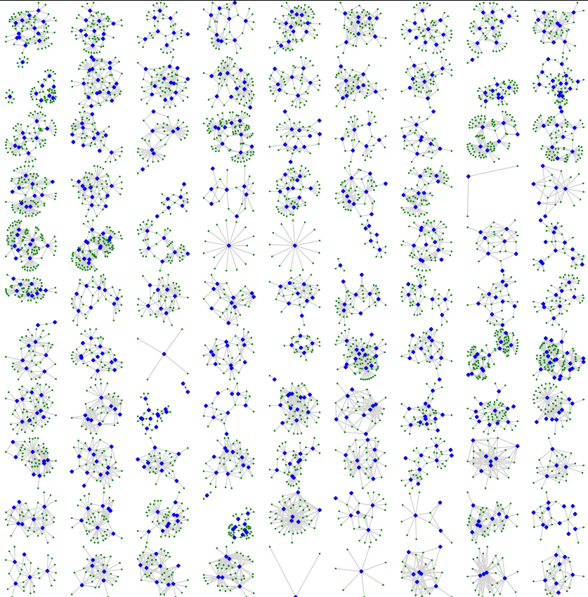
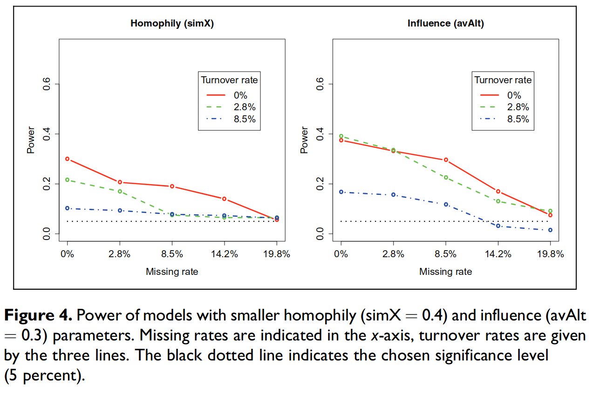
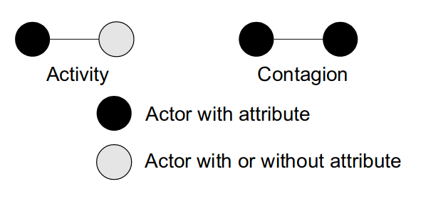
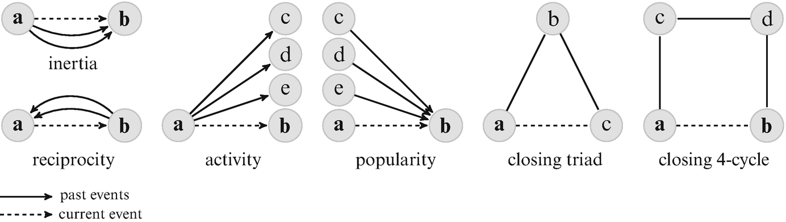
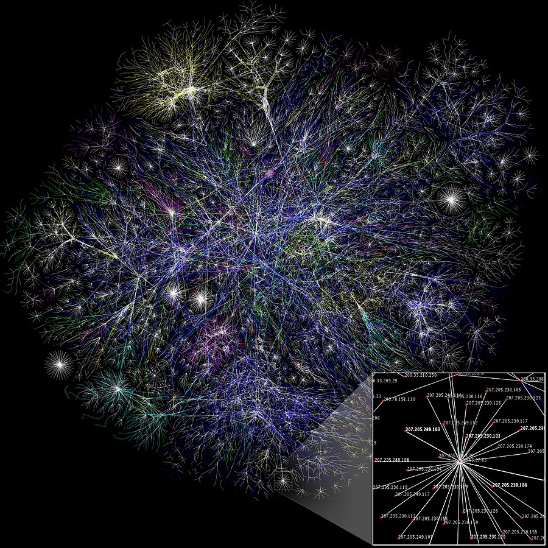
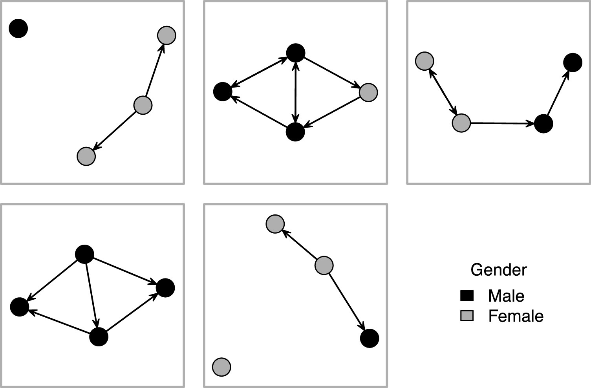
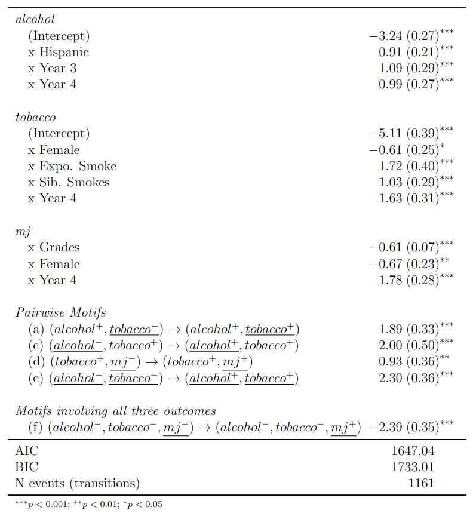
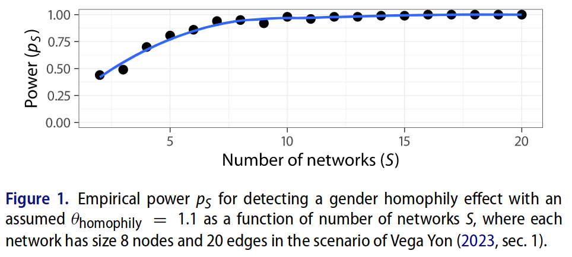
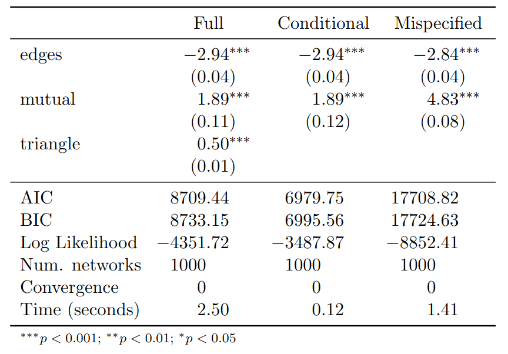

11 New topics in network modeling
11.1 Overview
With more data and computing resources, the things that we can ask and do with networks are becoming increasingly (even more) exciting and complex.
In this section, I will introduce some of the latest advancements and forthcoming topics in network modeling.
11.2 Part I: New models and extensions
11.3 Mutli-ERGMs
In Krivitsky, Coletti, and Hens (2023a), the authors present a start-to-finish pooled ERGM example featuring heterogeneous data sources.
They increase power and allow exploring heterogeneous effects across types/classes of networks.

11.4 Statistical power of SOAM
- SOAM Stadtfeld et al. (2020) proposes ways to perform power analysis for Siena models. At the center of their six-step approach is simulation.

11.5 Bayesian ALAAM
Ever wondered how to model influence exclusively?
The Auto-Logistic Actor Attribute Model [ALAAM] is a model that allows us to do just that.
Koskinen and Daraganova (2022) extends the ALAAM model to a Bayesian framework.
It provides greater flexibility to accommodate more complicated models and add extensions such as hierarchical models.

11.6 Relational Event Models
REMs are great for modeling sequences of ties (instead of panel or cross-sectional.)
Butts et al. (2023) provides a general overview of Relational Event Models [REMs,] new methods, and future steps.

11.7 Big ERGMs
- ERGMs In A. Stivala, Robins, and Lomi (2020), a new method is proposed to estimate large ERGMs (featuring millions of nodes).

{kind=link}
11.8 Exponential Random Network Models
Wang, Fellows, and Handcock recently published a re-introduction of the ERNM framework (Wang, Fellows, and Handcock 2023).
ERNMs generalize ERGMs to incorporate behavior and are the cross-sectional causing of SIENA models.
\begin{align*} \text{ER\textbf{G}M}: & P_{\mathcal{Y}, \bm{{\theta}}}(\bm{{Y}}=\bm{{y}} | \bm{{X}}=\bm{{x}}) \\ \text{ER\textbf{N}M}: & P_{\mathcal{Y}, \bm{{\theta}}}(\bm{{Y}}=\bm{{y}}, \bm{{X}}=\bm{{x}}) \end{align*}
11.9 Part II: Shameless self-promotion
11.10 ERGMitos: Small ERGMs
- ERGMitos1 (Vega Yon, Slaughter, and Haye 2021) leverage small network sizes to use exact statistics.

ergmito R package11.11 Discrete Exponential-family Models
ERGMs are a particular case of Random Markov fields.
We can use the ERGM framework for modeling vectors of binary outcomes, e.g., the consumption of \{tobacco, MJ, alcohol\}

11.12 Power analysis in ERGMs
- Using conditional ERGMs (closely related to constrained), we can do power analysis for network samples (Vega Yon 2023).

11.13 Two-step estimation ERGMs
Conditioning the ERGM on an observed statistic “drops” the associated coefficient.
Hypothesis: As n increases, conditional ERGM estimates are consistent with the full model:

11.14 Thanks!
11.15 Bonus track: Why network scientists don’t use ERGMs?
Attempts to overcome these problems by extending the blockmodel have focused particularly on the use of (more complicated) p^* or exponential random graph models, but while these are conceptually appealing, they quickly lose the analytic tractability of the original blockmodel as their complexity increases.
– Karrer and Newman (2011)
From the Spanish suffix meaning small.↩︎